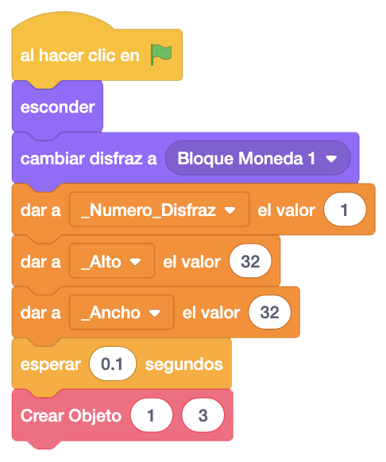
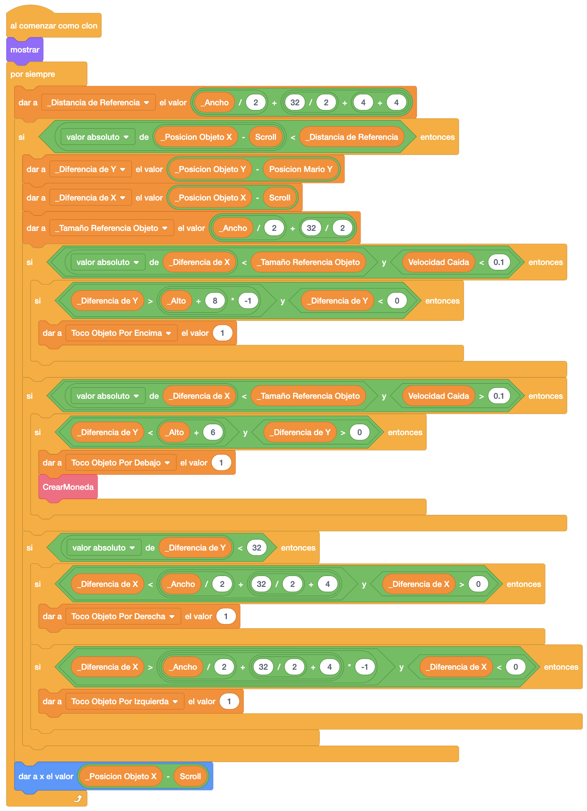
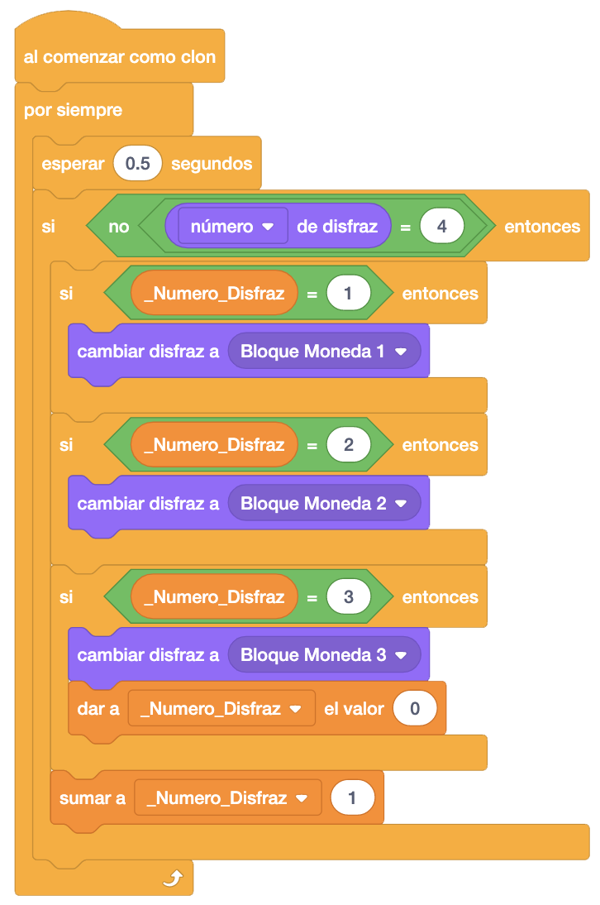
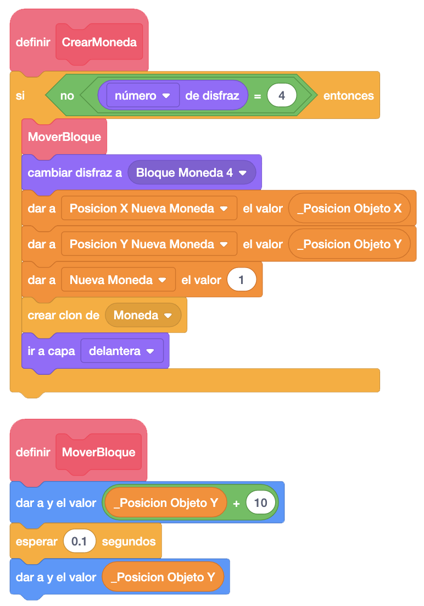
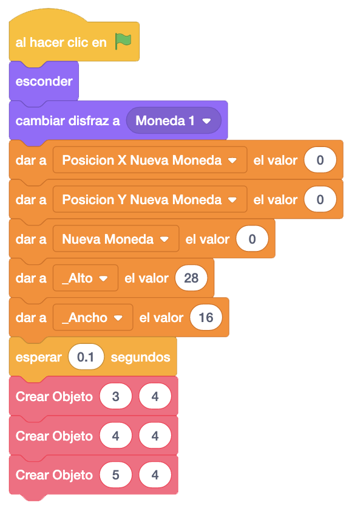
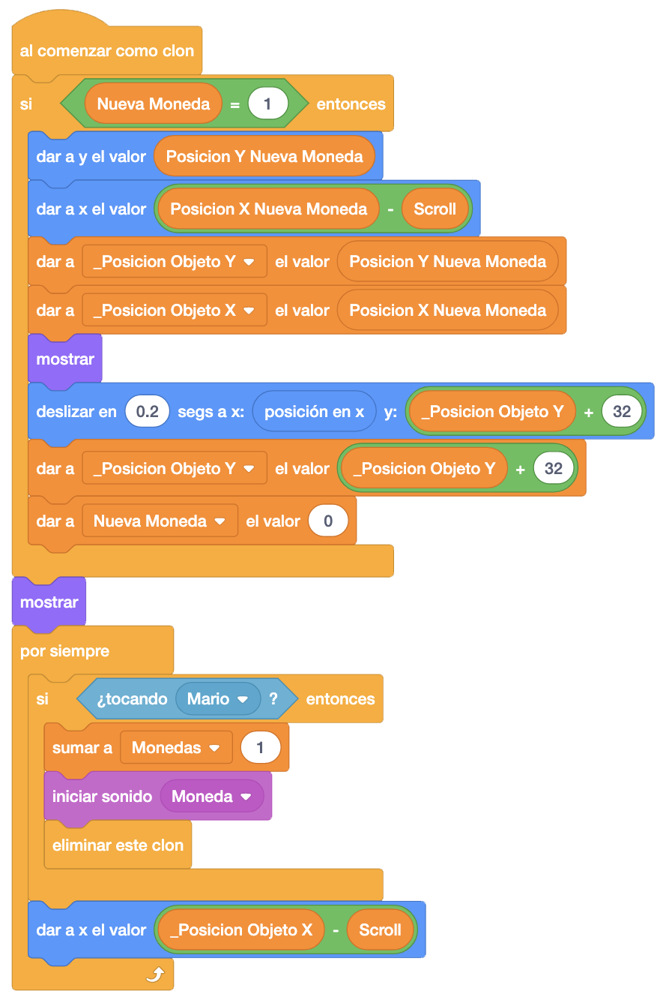

Vamos con el bloque moneda. Copiamos como en el suelo toda la programación de la plataforma.
En el bloque "Al Hacer Clic En La Bandera" le ponemos al bloque moneda el primer disfraz, le damos los valores
de alto y ancho y creamos el bloque antes de la primera plataforma.

En cuanto al bloque de "Al Comenzar Como Clon", lo único que hacemos es añadir donde ponemos a "1" la variable "Toco Objeto Por Debajo", hacer una llamada a un nuevo bloque que llamaremos "CrearMoneda".

Haremos ahora la gestión de los disfraces. Cambiaremos el disfraz cada medio segundo y siembre que no tenga el
cuarto disfraz que es el fijo, una vez golpeado el bloque.
Crearemos una nueva variable "_Numero_Disfraz" donde guardaremos el disfraz que le queremos poner y veremos
qué disfraz tiene para ponerle el siguiente (entre el 1 y el 3).

Programaremos ahora el nuevo bloque "CrearMoneda". Controlaremos que no se haya golpeado ya el bloque con el
número de disfraz que tiene.
Si no tiene el cuarto disfraz, llamaremos a un nuevo bloque "MoverBloque" donde haremos el efecto de subir y
bajar el bloque.
Después, cambiaremos al cuarto disfraz y guardaremos la posición del bloque en unas nuevas variables "Posicion
X Nueva Moneda" y "Posicion Y Nueva Moneda"
Daremos el valor "1" a la nueva variable "Nueva Moneda" y crearemos el clon de la moneda.

Ahora nos iremos a la moneda donde programaremos que aparezca la moneda en su sitio.
En el bloque "Al Hacer Clic En La Bandera", le añadiremos que inicialice las nuevas variables "Posicion X
Nueva Moneda", "Posicion Y Nueva Moneda" y "Nueva Moneda".

Además, en el bloque "Al Comenzar Como Clon", le añadimos que si la moneda que estamos creando es una moneda que hemos creado desde el bloque (el valor de "Nueva Moneda" es "1") la colocamos en su posición (detrás del cubo) y la deslizamos encima.
Ojo con las posiciones ya que siempre que queramos mover un objeto tenemos que actualizar sus posiciones iniciales.

El juego iría quedando así.
Podemos ver el juego terminado con el bloque moneda pulsando aquí.